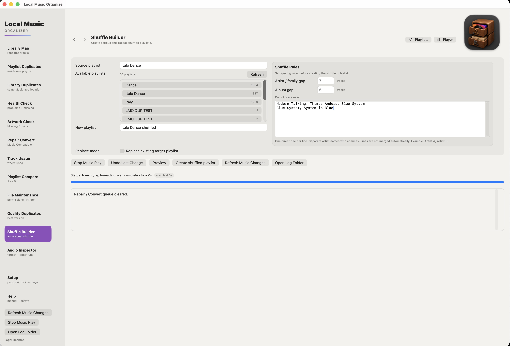

Why I Built Shuffle Builder
I listen to music in the car. In fact, that's pretty much the only place I listen. And that was where a small frustration gave me the idea for what would become Shuffle Builder.
For some reason, when I used Apple's shuffle, I kept hearing certain songs again while others seemed never to come up. I hadn't set any favorites or listening preferences. I used to try rearranging playlist tracks by hand, but that was tedious and took far too long.
So I had a simple idea: write a playlist randomizer. I could start a playlist in the car and enjoy a sequence that didn't keep throwing the same artists—or similar-sounding music—at me.
But an artist gap wasn't enough
The first rule was straightforward: keep a certain number of tracks between appearances by the same artist. Then I realized the catch. One voice can appear under several different names. Two tracks can list different artists and still feel like you're listening to the same singer—or the same musical family.
I'm an old-school Italo disco fan, and Modern Talking was one of the groups that introduced me to this music. Keeping Modern Talking songs apart is easy. But Thomas Anders has his solo recordings too. Then there's Blue System, Dieter Bohlen's other project, with a sound closely associated with the same era. And Systems in Blue, formed by studio singers who had worked on Bohlen-related productions, has its own records with a recognizably similar style.
Different artist names, connected musical worlds. Exactly the kind of situation where a simple artist-only shuffle can fall short.
One rule for a whole musical family
In Local Music Organizer, the Do not place near field lets me define that relationship directly. I can put these names on one comma-separated line:
Modern Talking, Thomas Anders, Blue System, Systems in Blue
Now Shuffle Builder tries to keep tracks from that entire group apart—not merely tracks bearing the exact same artist name. The Artist / family gap controls the preferred separation. It's a rule the builder works toward, not a promise that every playlist can satisfy every constraint.
And I might add Mark Ashley to that line, too. If you know his music, you'll understand why. ;-)
A small detour into pop history
There's a real story behind the studio voices. Rolf Köhler, Detlef Wiedeke and Michael Scholz were involved in a compensation dispute relating to their work on Modern Talking recordings. In 2001, the three reached a settlement reportedly worth about 100,000 Deutsche Marks each. That was a negotiated settlement, not a court judgment in their favor—and it wasn't specifically a ruling about unpaid extra studio hours. A contemporary account of the dispute gives the background. But that's a story of its own.
For me, the point was simple: shuffle should understand that artist names don't always tell the whole story. That's how a small playlist randomizer grew into one of the ideas behind Local Music Organizer.

Shuffle Builder lets you define related-artist groups, preview an arrangement and create a separate playlist.